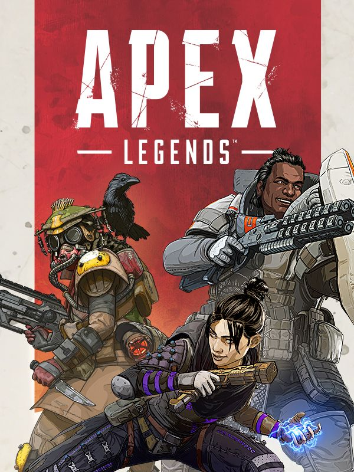

모든 것이 허용되는 세상

프론티어 전쟁은 끝났습니다. IMC와 저항군의 전쟁이 끝난 지 수십 년이 지난 후,
"프론티어"로 알려진 우주 변방 지역에도 마침내 평화가 찾아왔습니다.
하지만 자유에는 대가가 따르는 법... 프론티어는 전쟁으로 황폐해진 채 버려지고,
약속되었던 지원은 기약이 없었습니다.
스스로 삶을 지탱할 방법이 없었던 잔류자들은 고향을 등지고 떠날 수밖에 없었습니다.
그리고 용감한 이들은 아웃랜드로 눈을 돌렸습니다.
프론티어 외곽에 위치한 외딴 행성들의 집합체인 아웃랜드는 전쟁의 화마가 닿지 않았으며,
풍족한 자원과 많은 기회가 놓여 있는 곳입니다.
하지만 이곳에서 목숨은 헐값이며, 곳곳에는 위험이 도사리고 있습니다.
개척자, 탐험가, 무법자들은 끝 없는 권력 투쟁으로 세월을 보내왔으며,
지금은 프론티어 각지에서 온 '레전드'라 불리는 자들이 돈, 명성, 영광을 위해 경쟁하는 피의 경기인 '에이펙스 게임'에 참여하고 있습니다.
타이탄폴 시리즈와 같은 세계관을 가지고 있으며, 시간대는 타이탄폴2 이후로 30년 후이다.
공식 홈페이지 설명 글에서 짤막한 배경 설정을 알 수 있다. 타이탄폴 세계관에 등장하는 여러 행성들이 존재하는 우주 지역인 프론티어에서는 IMC와 저항군사이의 거대한 전쟁이 일어났었는데
30년 뒤인 Apex 레전드에서는 이미 전쟁이 끝난 시점이다. 프론티어 외곽에 위치한 외딴 행성들의 집합체인 "아웃랜드"라고 불리는 곳이 있으며, 게임의 배경이 되는 킹스 캐년 역시 이 아웃랜드에
속한 행성에 존재하는 섬이다. 바다쪽 배경을 보면 공룡 크기의 괴물이 있는 등 지구상에서 볼 수 없는 생명체들도 있다.
전쟁이 끝난 후 IMC와 저항군은 철수할 때 행성의 자원들을 모조리 가져가버렸고 프론티어 행성들의 원주민들은 부양할 방법이 없어 다른 행성으로 이주할 수밖에 없었다.
아웃랜드는 프론티어 외곽에 위치한 곳이기 때문에 전쟁의 영향을 거의 받지 않았고 자원과 기회로 가득 차있는 곳이었기 때문에 전쟁의 피해를 입은 프론티어 원주민들은 아웃랜드로 이주하게 된 것이다.
하지만 아웃랜드는 사방에 위험이 도사리고 있으며 개척자, 탐험가, 무법자들의 끝 없는 권력 투쟁이 가득한 곳이 되었고 지금은 프론티어의 모든 구석에서 온 '레전드'라 불리는 자들이 돈, 명성, 영광을 위해 경쟁하는 피의 요새인 '에이펙스 게임'에 참여하고 있다.
'에이펙스 게임'은 타이탄폴과 타이탄폴 2의 등장인물이기도 한 쿠벤 블리스크가 이끄는 용병 부대인 '에이펙스 프레데터'를 앞세워 아웃랜드를 점령하고 있는 신디케이트 용병단이 주최하고 있는 일종의 서바이벌 게임 대회로,
3명이 한 팀으로 여러 부대가 참가하여 최후까지 생존한 부대가 '챔피언'이 되어 거액의 상금을 얻는 게임이다. 인트로에서 나오는 신문 기사들을 보면 실시간으로 중계까지 하고 있어
수백만명의 시청자가 볼 정도로 인기가 많은 대회다. 또한 설정상 이 게임에서 전투 중에 죽어도 부활이 가능하다고 한다.
하지만 각 레전드들의 배경 설정 등을 읽어보면 모종의 사고 등으로 정말로 영원히 죽어버리는 일도 종종 일어나는 듯 하며, 에이펙스 게임 참여자들이 항상 죽음의 위험을 곁에 두고 있다는 암시가 곳곳에 나온다.